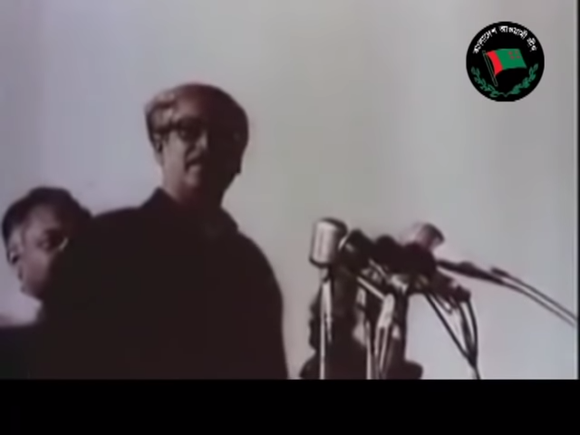

mujib

সত্তরের নির্বাচনে বিশাল বিজয়ের পর ঢাকার রেসকোর্স ময়দানে আওয়ামী লীগের এক সমাবেশ অনুষ্ঠিত
হয়। সমাবেশে জাতীয় ও প্রাদেশিক পরিষদে নির্বাচিত আওয়ামী লীগ দলীয় ৪১৯ জন সদস্য শপথ গ্রহণ
করেন। শপথ গ্রহণ অনুষ্ঠান পরিচালনা করেন শেখ মুজিবুর রহমান। রেসকোর্স ময়দানের বিশাল
জনসভায় শেখ মুজিবুর রহমান ঘোষণা করেন ৬-দফার ভিত্তিতে শাসনতন্ত্র প্রণীত হবেই, কেউ এটা
ঠেকাতে পারবে না।(৩ জানুয়ারি, ১৯৭১) ।

মুক্তিযুদ্ধ শুরুর প্রাক্কালে শহীদ দিবসে শেখ মুজিবুর রহমান শহীদ মিনারে এক গুরুত্বপূর্ণ ভাষণ দেন।
ভাষণে তিনি স্বাধিকার আদায় আন্দোলনের জন্য ঘরে ঘরে প্রস্তুত হওয়ার জন্য জনগণের প্রতি আহ্বান
জানান।(২১ ফেব্রুয়ারি, ১৯৭১) ।

বাঙালি জাতির মুক্তির আকাঙ্ক্ষাকে ধারণ করে শেখ মুজিবুর রহমান ঢাকার রেসকোর্স ময়দানে এক
ঐতিহাসিক ভাষণ দেন। ১৮ মিনিট ৩১ সেকেন্ডের এই ভাষণে শেখ মুজিবুর রহমান মুক্তিকামী বাঙালিকে
স্বাধীনতা সংগ্রামের জন্য প্রস্তুত হওয়ার আহ্বান জানান এবং বজ্রকন্ঠে ঘোষণা করেন “এবারের সংগ্রাম
আমাদের মুক্তির সংগ্রাম, এবারের সংগ্রাম আমাদের স্বাধীনতার সংগ্রাম”। ইউনেস্কো এই ঐতিহাসিক
ভাষণকে বিশ্বের গুরুত্বপূর্ণ প্রামাণ্য ঐতিহ্য হিসেবে স্বীকৃতি দিয়েছে। (৭ মার্চ, ১৯৭১)।

বাঙালি জাতিকে বৃহত্তর সংগ্রামের জন্য প্রস্তুত করার লক্ষ্যে শেখ মুজিবুর রহমান অসহযোগ আন্দোলনের
ডাক দেন। সেদিন সারা বাংলাদেশ জুড়ে পাকিস্তান দিবসের পরিবর্তে পালিত হয় প্রতিরোধ দিবস।
পাকিস্তানের পতাকার পরিবর্তে সর্বত্র বাংলাদেশের নতুন পতাকা উত্তোলন করা হয়। সূর্যোদয়ের সঙ্গে
সঙ্গেই শেখ মুজিবুর রহমান তার ধানমণ্ডির বাসভবনে নিজ হাতে উত্তোলন করেন স্বাধীন বাংলার পতাকা।
সেখানে সংক্ষিপ্ত ভাষণে শেখ মুজিবুর রহমান বলেন- “সাত কোটি মানুষের মুক্তি না হওয়া পর্যন্ত
আমাদের সংগ্রাম চলবে” (২৩ মার্চ, ১৯৭১)

১৯৭১ সালের ২৫ মার্চের কালরাতে, পাকিস্তানি হানাদার বাহিনী কর্তৃক গ্রেফতারের পূর্বমুহূর্তে শেখ
মুজিবুর রহমান বাংলাদেশের স্বাধীনতা ঘোষণা করেন। নিরস্ত্র বাঙালির উপর পাকিস্তানি হানাদার বাহিনীর
হত্যাযজ্ঞ এবং শেখ মুজিবুর রহমানের স্বাধীনতা ঘোষণার খবরটি বিশ্ব মিডিয়া গুরুত্ব সহকারে তুলে ধরে।
(২৬ মার্চ, ১৯৭১)।

12:30
দীর্ঘ নয় মাস পাকিস্তানি কারাগারে বন্দী থাকার পর বাঙালি জাতির অবিসংবাদিত নেতা শেখ মুজিবুর
রহমান পাকিস্তান থেকে লন্ডন এবং নয়াদিল্লী হয়ে বাংলাদেশে প্রত্যাবর্তন করেন। নয়াদিল্লীতে পৌঁছালে
ভারতের জনগণ শেখ মুজিবুর রহমানকে প্রাণঢালা অভিনন্দন এবং ভালোবাসা জানায়। অভিনন্দনের
জবাবে শেখ মুজিবুর রহমান মুক্তিযুদ্ধ চলাকালে ভারতের জনগণের সহযোগিতার জন্য ধন্যবাদ ও
কৃতজ্ঞতা জানান। নয়াদিল্লীতে সংবর্ধনা সভায় শেখ মুজিবুর রহমান আরো বলেন- “আমি বিশ্বাস করি
সেক্যুলারিজমে। আমি বিশ্বাস করি গণতন্ত্রে, আমি বিশ্বাস করি সোশ্যালিজমে।" (১০ জানুয়ারি, ১৯৭২)।

বাংলাদেশের স্থপতি শেখ মুজিবুর রহমান পাকিস্তানের কারাগার থেকে মুক্ত হয়ে ফিরে আসেন স্বাধীন
-সার্বভৌম বাংলাদেশে। সেদিন বাঙালি জাতি তাঁর শ্রেষ্ঠ সন্তানকে অবিস্মরণীয় সংবর্ধনা জানায়। লক্ষ
জনতার হৃদয় নিঙড়ানো ভালোবাসায় স্নাত হয়ে শেখ মুজিবুর রহমান বিমানবন্দর থেকে সরাসরি
রেসকোর্স ময়দানে আসেন এবং অশ্রুসিক্ত নয়নে জাতির উদ্দেশ্যে ভাষণ দেন। ভাষণে শেখ মুজিবুর
রহমান বলেন- ‘যে মাটিকে আমি এত ভালবাসি, যে মানুষকে আমি এত ভালবাসি, যে জাতিকে আমি এত
ভালবাসি, আমি জানতাম না সে বাংলায় আমি যেতে পারবো কিনা। আজ আমি বাংলায় ফিরে এসেছি
বাংলার ভাইয়েদের কাছে, মায়েদের কাছে, বোনদের কাছে। বাংলা আমার স্বাধীন, বাংলাদেশ আজ স্বাধীন।’
(১০ জানুয়ারি। ১৯৭২)।

স্বাধীন বাংলাদেশের প্রধানমন্ত্রী হিসেবে দায়িত্ব গ্রহণের পর শেখ মুজিবুর রহমান ভারতে প্রথম রাষ্ট্রীয়
সফরে যান। কলকাতার ব্রিগেড প্যারেড গ্রাউন্ডে লক্ষ লক্ষ মানুষের সামনে ভারতের সর্বস্তরের মানুষ ও
ভারতীয় প্রধানমন্ত্রীর প্রতি কৃতজ্ঞতা প্রকাশ করেন শেখ মুজিবুর রহমান ( ৬ মার্চ, ১৯৭২)।

মুক্তিযুদ্ধ শেষে সদ্য স্বাধীন দেশের সার্বিক নিরাপত্তা বজায় রাখার স্বার্থে প্রধানমন্ত্রী শেখ মুজিবুর রহমান
মুক্তিযোদ্ধাদের উদ্দেশ্যে অস্ত্র সমপর্ণের আহ্বান জানান। শেখ মুজিবুর রহমানের আহ্বানে সাড়া দিয়ে
মুক্তিযোদ্ধারা ঢাকা স্টেডিয়ামে অস্ত্র সমপর্ণ করেন। অস্ত্র সমপর্ণ অনুষ্ঠানে এক আবেগঘন ভাষণে
মুক্তিযোদ্ধাদের উদ্দেশ্যে শেখ মুজিবুর রহমান বলেন –“আমি সব ত্যাগ করতে পারি কিন্তু তোমাদের
ভালোবাসা ত্যাগ করতে পারি না” (৩১ জানুয়ারি,১৯৭২) ।

সদ্য স্বাধীন বাংলাদেশের জন্য আন্তর্জাতিক সমর্থন ও সহযোগিতা লাভের উদ্দেশ্যে শেখ মুজিবুর রহমান
আলজেরিয়ার রাজধানী আলজিয়ার্সে অনুষ্ঠিত চতুর্থ ন্যাম শীর্ষ সম্মেলনে যোগ দেন। ওই সময় তিনি
বাদশাহ ফয়সাল, প্রেসিডেন্ট টিটো, প্রেসিডেন্ট আনোয়ার সাদাত, প্রেসিডেন্ট ইদি আমিন, প্রেসিডেন্ট
মুয়াম্মার গাদ্দাফি, প্রধানমন্ত্রী স্লথ প্রমুখ ব্যক্তির সঙ্গে দ্বিপক্ষীয় বৈঠকে মিলিত হন। ন্যাম সম্মেলনের
ঐতিহাসিক বক্তৃতায় শেখ মুজিবুর রহমান বলেন – “বিশ্ব আজ দুই ভাগে বিভক্ত,শোষক আর
শোষিত,আমি শোষিতের পক্ষে" ( ৬ সেপ্টেম্বর, ১৯৭৩)।

মুজিবুর রহমান। সেই হিরণ্ময় বক্তৃতায় শেখ মুজিবুর রহমান বলেন -“‘বাংলাদেশের মতো যেই
সব দেশ দীর্ঘ সংগ্রাম ও আত্মদানের মাধ্যমে নিজেদের প্রতিষ্ঠিত করিয়াছে, কেবল তাহাদেরই এই
দৃঢ়তা ও মনোবল রহিয়াছে, মনে রাখিবেন সভাপতি, আমার বাঙালি জাতি চরম দুঃখ ভোগ
করিতে পারে, কিন্তু মরিবে না, টিকিয়া থাকিবার চ্যালেঞ্জ মোকাবেলায় আমার জনগণের দৃঢ়তাই
আমাদের প্রধান শক্তি।’(২৫ সেপ্টেম্বর, ১৯৭৪)।

স্বাধীন বাংলাদেশে সদ্য প্রতিষ্ঠিত মিলিটারি একাডেমির উদ্বোধনী অনুষ্ঠানে সেনাবাহিনীর প্রতি এক দিক
নির্দেশনামূলক বক্তৃতা রাখেন শেখ মুজিবুর রহমান। বক্তৃতায় শেখ মুজিবুর রহমান বলেন- ‘শৃঙ্খলা
ছাড়া কোন জাতি বড় হতে পারে না’ (১১ জানুয়ারি, ১৯৭৫) ।

সরকারী কর্মকর্তা -কর্মচারীদের উদ্দেশ্যে দেয়া ভাষণে শেখ মুজিবুর রহমান স্মরণ করিয়ে দেন- দেশের
শ্রমিক -কৃষক-মেহনতি মানুষের অর্থে দেশ পরিচালিত হয়, তাঁরাই এইদেশের মালিক সুতরাং তাঁদের যথার্থ
সম্মান এবং সেবা দিতে হবে সবার আগে।(২৫ জানুয়ারি, ১৯৭৫)।